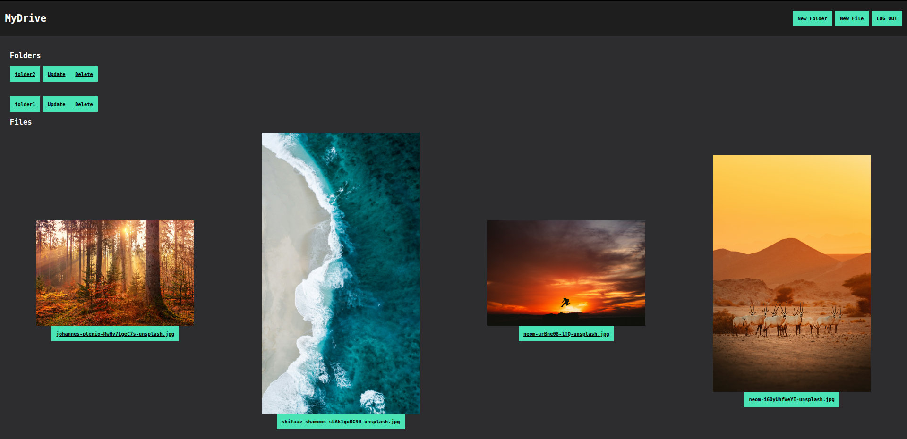

MyDrive
Scope
Team
- Zack Hoang
Timeline
July 2025 - Aug 2025
Role(s)
- Backend Developer
Overview
MyDrive is a secure(-ish?) cloud storage for your images. Written using ExpressJS and its middleware ecosystem, it contains most of the basic features you can expect from a file uploader: Authentication, CRUDable folders and files upload, download and delete.
Tools
- ExpressJS: JavaScript backend framework
- EJS: genereate HTML with JavaScript
- Express Validator: sanitize and validate user-provided input
- Multer: handle processing uploaded files
- PostgreSQL: database
- Prisma: ORM
- PassportJS: NodeJS authentication middleware
- PassportJS Local Strategy: authentication strategy with username and password
- Cloudinary API: image storage
Features
- Authentication: with usernames and passwords
- CRUDable folders: Create, Read files, Update name, and Delete folders. These are records that lies inside database that gets queried based on its ID and its author
- Upload files: upload images and store a record of upload information in the database, while image is stored in Cloudinary
- View file's details: file details can be viewed in a seperate route. Details include: file name, upload time, file size
Challenges
- Setting Up Initial Schema: setting up the database during the early stage to me the most amount of time and also a lot of migration to get to the final results. I ended up writting relations that I did not need at all until I realized I could make the app work with just querying scalar fields, with a small cost of querying more models. However, I did not find this to be much of a problem at all given this project's scope.
-
Folder deletion: deleting one folder means to also delete all of its descendants and files that contains within itself and its descendants. One could solve this problem recursively by deleting folders and files with the given ID of a parent, but I did not find this solution to be so intuitive. I settled for a simple Breadth First Search approach which goes like so:
- Given a folder's ID, insert that ID into an array act as a queue
- Start the search, searching for folders that has its ID parent equal to the ID that we are trying to search
- If the search does not return any result, we know that folder does not have anymore descendant. We mark them as visited by insert that ID into another array called
visitedFoldersID, dequeue, and search the next item in the queue - Once the queue is empty, meaning the search is done,
visitedFoldersIDshould now be an array of ID strings, which could be iterated through and delete on the database. For each iteration, we also delete all files that are contained in each folder.
- File Type Checking: I wanted to restrict users to only upload images. This is a small security check I implemented so that Cloudinary's storage does not grow too quick, since we can assume images files are quite small, ranging around a few kilobytes to megabytes and making sure users does not upload any suspicious or malicious files.
Takeaway
This has been my most challenging project so far and it has given me some ground to develop RESTful APIs for coming future projects. On top of being fun, it has given me some insights on how a common cloud storage works on the surface.